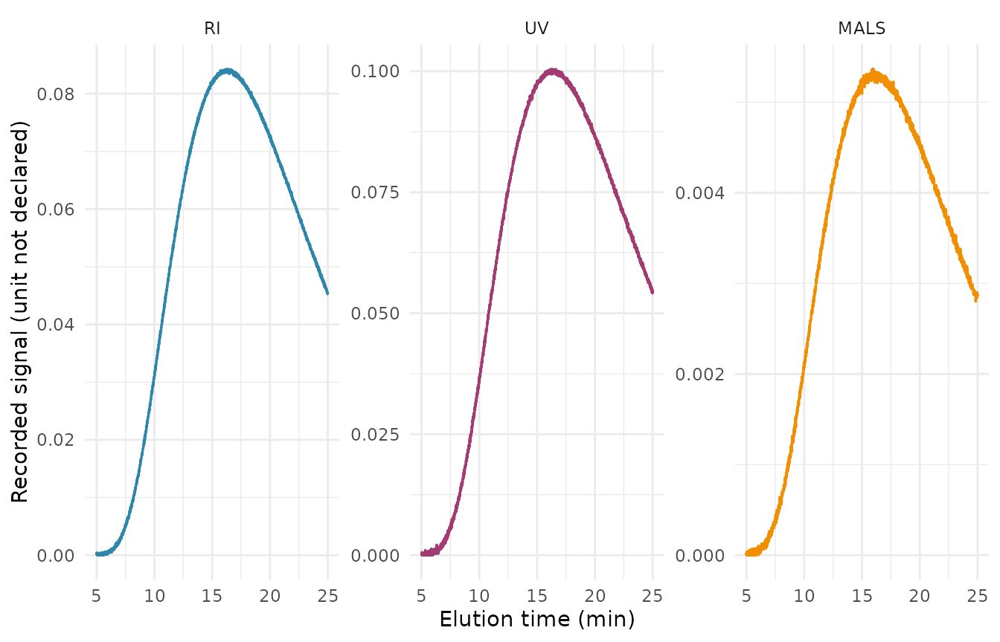

Multi-Detector SEC: Detector Integration and Workflows
Source:vignettes/triple-detection.Rmd
triple-detection.RmdFor an executable check of signed RI conversion, concentration units and clipped-signal diagnostics, see Detector units and clipping.
Overview
Multi-detector SEC combines concentration measurements with scattering or viscometer signals. Detector delays and signal processing affect slice-level calculations, so the channels need to be aligned on a shared elution axis.
This guide shows the recipe structure and the roles of common SEC
detectors. The current step_sec_mals() step returns a
single-angle estimate; absolute values require a calibrated detector and
concentration with declared units.
For a runnable delay correction using the package’s raw example data, see the Tutorial: triple detection from raw data.
Setup
library(measure)
#> Loading required package: recipes
#> Loading required package: dplyr
#>
#> Attaching package: 'dplyr'
#> The following objects are masked from 'package:stats':
#>
#> filter, lag
#> The following objects are masked from 'package:base':
#>
#> intersect, setdiff, setequal, union
#>
#> Attaching package: 'recipes'
#> The following object is masked from 'package:stats':
#>
#> step
library(measure.sec)
library(recipes)
library(dplyr)
library(ggplot2)Multi-detector workflow
Align detector channels to shared elution coordinates before matching values at each slice.
flowchart TB
subgraph Input["Raw Multi-Detector Data"]
A1[RI Signal]
A2[UV Signal]
A3[Light Scattering<br>MALS/LALS/RALS]
A4[Viscometer Signal]
end
subgraph Align["⏱️ Detector Alignment"]
B[step_sec_detector_delay<br>Correct inter-detector delays]
end
subgraph Process["📊 Signal Processing"]
C1[step_sec_ri<br>dn/dc normalization]
C2[step_sec_uv<br>ε normalization]
C3[step_sec_mals/lals/rals<br>Light scattering processing]
C4[step_sec_viscometer<br>Differential pressure]
end
subgraph Concentration["📏 Concentration"]
D0[step_sec_concentration<br>Convert to mass concentration]
end
subgraph Calculate["🔬 Calculations"]
D2[Single-angle MW estimate<br>absolute only with calibration]
D4[step_sec_intrinsic_visc<br>η from viscometer + concentration]
end
subgraph Results["📤 Results"]
E1[MW Averages<br>Mn, Mw, Mz]
E3[Mark-Houwink<br>Universal Calibration]
end
A1 & A2 & A3 & A4 --> B
B --> C1 & C2 & C3 & C4
C1 & C2 --> D0
D0 --> C3
D0 --> D4
C3 --> D2
C4 --> D4
D2 --> E1
D4 --> E3
style Input fill:#e3f2fd
style Results fill:#e8f5e9Detector types
Concentration detectors
| Detector | Signal | Best For |
|---|---|---|
| RI | Refractive index | Universal detection, mass-based concentration |
| UV | Absorbance | Chromophore-containing samples |
| DAD | Multi-wavelength UV | Complex samples, composition |
Molecular-weight detectors
| Detector | When to Use | See Also |
|---|---|---|
| MALS | One-angle estimate; current step does not calculate Rg | MALS Detection |
| LALS | Low-angle single-angle estimate | LALS/RALS Detection |
| RALS | Right-angle single-angle estimate | LALS/RALS Detection |
Example dataset
data(sec_triple_detect, package = "measure.sec")
# Select sample data (excluding standards)
samples <- sec_triple_detect |>
filter(sample_type == "sample")
glimpse(samples)
#> Rows: 14,007
#> Columns: 11
#> $ sample_id <chr> "PMMA-Low", "PMMA-Low", "PMMA-Low", "PMMA-Low", "PMMA…
#> $ sample_type <chr> "sample", "sample", "sample", "sample", "sample", "sa…
#> $ polymer_type <chr> "pmma", "pmma", "pmma", "pmma", "pmma", "pmma", "pmma…
#> $ elution_time <dbl> 5.00, 5.01, 5.02, 5.03, 5.04, 5.05, 5.06, 5.07, 5.08,…
#> $ ri_signal <dbl> 2.177879e-04, 0.000000e+00, 2.307149e-04, 1.490633e-0…
#> $ uv_signal <dbl> 0.000000e+00, 0.000000e+00, 0.000000e+00, 6.442527e-0…
#> $ mals_signal <dbl> 3.454417e-06, 1.210776e-05, 1.804800e-05, 2.001408e-0…
#> $ known_mw <dbl> 25000, 25000, 25000, 25000, 25000, 25000, 25000, 2500…
#> $ known_dispersity <dbl> 1.8, 1.8, 1.8, 1.8, 1.8, 1.8, 1.8, 1.8, 1.8, 1.8, 1.8…
#> $ dn_dc <dbl> 0.084, 0.084, 0.084, 0.084, 0.084, 0.084, 0.084, 0.08…
#> $ extinction_coef <dbl> 0.1, 0.1, 0.1, 0.1, 0.1, 0.1, 0.1, 0.1, 0.1, 0.1, 0.1…The dataset stores RI, UV, and MALS responses on separate numeric scales. This plot shows one synthetic sample without rescaling the channels; the y-axis units are not specified by the dataset.
response_plot <- samples |>
filter(sample_id == "PMMA-Med") |>
tidyr::pivot_longer(
cols = c(ri_signal, uv_signal, mals_signal),
names_to = "detector",
names_pattern = "(.*)_signal",
values_to = "signal"
) |>
mutate(detector = factor(detector, levels = c("ri", "uv", "mals"),
labels = c("RI", "UV", "MALS")))
ggplot(response_plot, aes(elution_time, signal, color = detector)) +
geom_line(linewidth = 0.6) +
facet_wrap(~detector, nrow = 1, scales = "free_y") +
scale_color_manual(values = c(RI = "#2E86AB", UV = "#A23B72",
MALS = "#F18F01")) +
labs(
x = "Elution time (min)",
y = "Recorded signal (unit not declared)"
) +
theme_minimal(base_size = 11) +
theme(legend.position = "none")
Raw RI, UV, and MALS signals for PMMA-Med from the synthetic
sec_triple_detect dataset. Each detector has its own
vertical scale, so the panel heights do not compare response magnitude
across detectors; the dataset does not declare response units.
Inter-detector delay correction
Detectors connected in series can observe the same sample at different elution coordinates. Correct measured delays before matching detector values at each slice.
The package’s raw-data tutorial plots a delay standard before and after interpolation-based alignment. The correction samples each target at the reference coordinate plus its declared target-minus-reference delay; positive and negative delays therefore move in opposite directions.
Correcting delays
Use step_sec_detector_delay() to align all
detectors:
rec <- recipe(
ri_signal + uv_signal + mals_signal + elution_time + dn_dc + extinction_coef ~ sample_id,
data = samples
) |>
update_role(sample_id, new_role = "id") |>
# Convert all detector signals to measure format
step_measure_input_long(ri_signal, location = vars(elution_time), col_name = "ri") |>
step_measure_input_long(uv_signal, location = vars(elution_time), col_name = "uv") |>
step_measure_input_long(mals_signal, location = vars(elution_time), col_name = "mals") |>
# Correct inter-detector delays
# Positive values = detector is downstream (later)
# Negative values = detector is upstream (earlier)
step_sec_detector_delay(
reference = "ri",
delay_volumes = c(uv = -0.05, mals = 0.15)
)Determining delay values
Delay volumes should be determined experimentally:
- Inject a narrow standard (e.g., low MW polymer or toluene)
- Measure peak apex times on each detector
- Calculate delays relative to reference detector (usually RI)
-
Convert time to volume:
delay_volume = delay_time × flow_rate
Tip: Re-calibrate delays after column changes or major maintenance.
Triple-detection workflow
A complete “triple detection” recipe with RI, UV, and light scattering:
# Complete triple detection recipe
rec_triple <- recipe(
ri_signal + uv_signal + mals_signal + elution_time + dn_dc + extinction_coef ~ sample_id,
# UV normalization requires a positive extinction coefficient.
data = dplyr::filter(samples, extinction_coef > 0)
) |>
update_role(sample_id, new_role = "id") |>
# Step 1: Convert signals to measure format
step_measure_input_long(ri_signal, location = vars(elution_time), col_name = "ri") |>
step_measure_input_long(uv_signal, location = vars(elution_time), col_name = "uv") |>
step_measure_input_long(mals_signal, location = vars(elution_time), col_name = "mals") |>
# Step 2: Correct inter-detector delays
step_sec_detector_delay(
reference = "ri",
delay_volumes = c(uv = -0.05, mals = 0.15)
) |>
# Step 3: Baseline correction
step_sec_baseline(measures = c("ri", "uv", "mals")) |>
# Step 4: Process concentration detectors
step_sec_ri(measures = "ri", dn_dc_column = "dn_dc") |>
step_sec_uv(measures = "uv", extinction_column = "extinction_coef") |>
# Step 5: Convert to concentration (MUST come before MALS)
step_sec_concentration(
measures = "ri",
detector = "ri",
injection_volume = 100, # µL
sample_concentration = 2.0 # mg/mL
) |>
# Step 6: Process MALS (absolute values also require detector calibration)
step_sec_mals(mals_col = "mals", dn_dc_column = "dn_dc")
#> Warning: No scattering calibration constant supplied; output is relative and
#> uncalibrated.
prepped_triple <- prep(rec_triple)
#> Warning: Negative detector values were excluded during mass normalization.
#> ℹ 1379 of 10005 signal points (13.8%) were set to zero.
#> ℹ Column "ri": maximum negative share of absolute sampled signal area was 0.8%
#> in row 1.
result_triple <- bake(prepped_triple, new_data = NULL)
# View results - output is relative without a scattering calibration constant
# For MW averages, you would integrate over the chromatogram
result_triple |>
select(sample_id, starts_with("mw_"))
#> # A tibble: 5 × 2
#> sample_id mw_mals
#> <chr> <meas>
#> 1 PMMA-Low [2,001 × 2]
#> 2 PMMA-Med [2,001 × 2]
#> 3 PMMA-High [2,001 × 2]
#> 4 Copoly-A [2,001 × 2]
#> 5 Copoly-B [2,001 × 2]Viscometer integration
step_sec_viscometer() converts calibrated pressure
signals to specific viscosity. step_sec_intrinsic_visc()
combines it with concentration to estimate intrinsic viscosity [η].
Why intrinsic viscosity matters
Intrinsic viscosity relates polymer size in solution to
concentration. The Mark-Houwink relationship is
[η] = K × M^a; its parameters depend on the polymer and
solution conditions.
Viscometer workflow
# Viscometer integration
# This external input must include RI, differential-pressure (DP), and
# inlet-pressure (IP) curves on a shared elution axis. Supply the settings
# below from the method, sample record, and viscometer standard calibration.
# dp_delay_ml, ip_delay_ml, flow_rate_ml_min, injection_volume_ul,
# sample_concentration_mg_ml, viscometer_constant, left_baseline_fraction,
# and right_baseline_fraction are method-specific. The baseline fractions must
# cover peak-free regions for both RI and DP.
rec_visc <- recipe(~ ., data = visc_samples) |>
update_role(sample_id, dn_dc, new_role = "id") |>
# Convert the measured pressure and RI curves to measure columns
step_measure_input_long(ri_signal, location = vars(elution_time), col_name = "ri") |>
step_measure_input_long(dp_signal, location = vars(elution_time), col_name = "dp") |>
step_measure_input_long(ip_signal, location = vars(elution_time), col_name = "ip") |>
# Baseline-correct RI and DP in their recorded peak-free regions; retain IP
step_sec_baseline(
measures = c("ri", "dp"),
left_frac = left_baseline_fraction,
right_frac = right_baseline_fraction
) |>
# Use target-minus-reference delays measured for these channels
step_sec_detector_delay(
reference = "ri",
targets = c("dp", "ip"),
delay_volumes = c(dp = dp_delay_ml, ip = ip_delay_ml),
flow_rate = flow_rate_ml_min,
elution_units = "min",
method = "interpolate"
) |>
# Process the baseline-corrected RI response; IP keeps its positive reference
step_sec_ri(measures = "ri", dn_dc_column = "dn_dc") |>
# Use the calibrated viscometer constant and both pressure channels
step_sec_viscometer(
dp_col = "dp",
ip_col = "ip",
output_col = "specific_visc",
viscometer_constant = viscometer_constant
) |>
# Concentration normalization updates the selected RI measure in place
step_sec_concentration(
measures = "ri",
detector = "ri",
injection_volume = injection_volume_ul,
sample_concentration = sample_concentration_mg_ml,
flow_rate = flow_rate_ml_min,
concentration_units = "mg/mL",
elution_units = "min"
) |>
# The concentration column is still named ri after normalization
step_sec_intrinsic_visc(
specific_visc_col = "specific_visc",
concentration_col = "ri",
concentration_unit = "mg/mL",
units = "dL/g"
)
# After substituting method-specific inputs and standards:
prepped_visc <- prep(rec_visc)
result_visc <- bake(prepped_visc, new_data = NULL)This template expects a visc_samples object containing
measured dp_signal and ip_signal curves, plus
RI, elution_time, and dn_dc. The recipe keeps
signals as predictors and preserves sample metadata with an ID role, so
an exactly constant IP channel remains a curve during input conversion.
Select left and right baseline fractions from recorded peak-free regions
for RI and DP, and apply them before delay interpolation. Do not
baseline-subtract IP: the differential calculation uses the measured
positive IP reference in IP - 2 * DP. Interpolation leaves
unsupported target edges missing. The template is not run here because
the instrument data, delays, baseline regions, concentration inputs, and
calibration constant are not bundled.
Intrinsic-viscosity output
The viscometer step adds specific_visc. Concentration
normalization writes the mass-concentration curve into the selected
measure (ri in the template), and
step_sec_intrinsic_visc() adds [η] at each
elution slice:
| Step | Output column | Description |
|---|---|---|
step_sec_viscometer() |
specific_visc |
Specific viscosity from DP and IP |
step_sec_concentration(measures = "ri") |
ri |
Concentration in mg/mL; the measure is updated in place |
step_sec_intrinsic_visc() |
intrinsic_visc |
Intrinsic viscosity [η], in dL/g by default |
This can be combined with MW data for Mark-Houwink analysis or branching calculations.
Universal calibration
Universal calibration relates elution to hydrodynamic volume,
commonly expressed using [η] × M.
The universal-calibration principle
The recipe below extends rec_visc from the previous
section. It expects a calibration object built from measured standard
retention and molecular-weight values, plus Mark-Houwink parameters for
the standard and sample polymers in the same solvent and temperature
conditions. Retention values must use the same elution coordinate as the
sample measure. The current data-frame path fits a cubic curve, so
provide enough distinct standard retention values. The template uses
mw_universal as the default output column; it does not
supply or imply a measured calibration.
Applying universal calibration
# `ps_calibration` must come from measured standards: a data frame with
# `retention` and either `mw` or `log_mw` columns, or an `lm` model.
# Define these four values from the standard/sample polymer method conditions.
rec_universal <- rec_visc |>
step_sec_universal_cal(
measures = "intrinsic_visc",
calibration = ps_calibration,
intrinsic_visc_col = "intrinsic_visc",
K_sample = K_sample,
a_sample = a_sample,
K_standard = K_standard,
a_standard = a_standard
)
prepped_universal <- prep(rec_universal)
result_universal <- bake(prepped_universal, new_data = NULL)
result_universal |>
select(sample_id, mw_universal)Quadruple-detection workflow
Full workflow combining RI, UV, light scattering, and viscometer:
# Complete quadruple detection workflow
# This external dataset needs DP and IP pressure curves as separate channels.
# Replace each delay, flow, injection, concentration, baseline, and calibration
# symbol below with values from the method, sample record, or standards.
rec_quad <- recipe(~ ., data = quad_samples) |>
update_role(sample_id, dn_dc, extinction_coef, new_role = "id") |>
# Input all detectors
step_measure_input_long(ri_signal, location = vars(elution_time), col_name = "ri") |>
step_measure_input_long(uv_signal, location = vars(elution_time), col_name = "uv") |>
step_measure_input_long(mals_signal, location = vars(elution_time), col_name = "mals") |>
step_measure_input_long(dp_signal, location = vars(elution_time), col_name = "dp") |>
step_measure_input_long(ip_signal, location = vars(elution_time), col_name = "ip") |>
# Use peak-free regions for RI, UV, MALS, and DP; preserve the IP reference
step_sec_baseline(
measures = c("ri", "uv", "mals", "dp"),
left_frac = left_baseline_fraction,
right_frac = right_baseline_fraction
) |>
# Delay correction (all relative to RI)
step_sec_detector_delay(
reference = "ri",
targets = c("uv", "mals", "dp", "ip"),
delay_volumes = c(
uv = uv_delay_ml,
mals = mals_delay_ml,
dp = dp_delay_ml,
ip = ip_delay_ml
),
flow_rate = flow_rate_ml_min,
elution_units = "min",
method = "interpolate"
) |>
# Process concentration detectors
step_sec_ri(measures = "ri", dn_dc_column = "dn_dc") |>
step_sec_uv(measures = "uv", extinction_column = "extinction_coef") |>
# Get concentration
step_sec_concentration(
measures = "ri",
detector = "ri",
injection_volume = injection_volume_ul,
sample_concentration = sample_concentration_mg_ml,
flow_rate = flow_rate_ml_min,
concentration_units = "mg/mL",
elution_units = "min"
) |>
# Process MW detector (choose appropriate step)
step_sec_mals(mals_col = "mals", dn_dc_column = "dn_dc") |>
# Process measured DP/IP and use calibrated viscometer output fields
step_sec_viscometer(
dp_col = "dp",
ip_col = "ip",
output_col = "specific_visc",
viscometer_constant = viscometer_constant
) |>
step_sec_intrinsic_visc(
specific_visc_col = "specific_visc",
concentration_col = "ri",
concentration_unit = "mg/mL",
units = "dL/g"
)This external template keeps ip out of baseline
subtraction because its positive pressure reference is required in the
IP - 2 * DP denominator. Choose the common baseline
fractions from peak-free regions of RI, UV, MALS, and DP, then
interpolate using method-measured delays and flow. Unsupported target
edges remain missing; the instrument data and method settings are not
included here.
Comparing molecular-weight results
A conventional calibration reports values on the scale of its standards. Light-scattering estimates use detector response and concentration; absolute values require a suitable instrument calibration constant. Compare results only when the calibration basis and units are recorded.
Troubleshooting
Common issues
| Problem | Likely Cause | Solution |
|---|---|---|
| MW varies with injection | Delay values incorrect | Recalibrate with narrow standard |
| Noisy viscometer signal | Air bubbles | Degas mobile phase, check connections |
| RI baseline drift | Temperature variation | Improve thermal control |
| LS signal too weak | Low concentration | Increase injection mass |
Detector-specific troubleshooting
For light scattering issues, see: - MALS Detection - MALS-specific troubleshooting - LALS/RALS Detection - Single-angle troubleshooting
See also
- MALS Detection - Single-angle implementation and multi-angle limits
- LALS/RALS Detection - Single-angle alternatives
- Getting Started - Basic SEC workflow
- Calibration Management - Save and reuse calibrations
- Copolymer Composition - Multi-detector composition analysis
Session info
sessionInfo()
#> R version 4.6.2 (2026-10-29)
#> Platform: x86_64-pc-linux-gnu
#> Running under: Ubuntu 26.04.1 LTS
#>
#> Matrix products: default
#> BLAS: /usr/lib/x86_64-linux-gnu/openblas-pthread/libblas.so.3
#> LAPACK: /usr/lib/x86_64-linux-gnu/openblas-pthread/libopenblasp-r0.3.32.so; LAPACK version 3.12.0
#>
#> locale:
#> [1] LC_CTYPE=C.UTF-8 LC_NUMERIC=C LC_TIME=C.UTF-8
#> [4] LC_COLLATE=C.UTF-8 LC_MONETARY=C.UTF-8 LC_MESSAGES=C.UTF-8
#> [7] LC_PAPER=C.UTF-8 LC_NAME=C LC_ADDRESS=C
#> [10] LC_TELEPHONE=C LC_MEASUREMENT=C.UTF-8 LC_IDENTIFICATION=C
#>
#> time zone: UTC
#> tzcode source: system (glibc)
#>
#> attached base packages:
#> [1] stats graphics grDevices utils datasets methods base
#>
#> other attached packages:
#> [1] ggplot2_4.0.4 measure.sec_0.0.0.9000 measure_0.0.1.9003
#> [4] recipes_1.4.0 dplyr_1.2.1
#>
#> loaded via a namespace (and not attached):
#> [1] gtable_0.3.6 xfun_0.62 bslib_0.12.0
#> [4] lattice_0.23-1 vctrs_0.7.3 tools_4.6.2
#> [7] generics_0.1.4 parallel_4.6.2 tibble_3.3.1
#> [10] pkgconfig_2.0.3 Matrix_1.7-6 data.table_1.18.6.1
#> [13] RColorBrewer_1.1-3 S7_0.2.2 desc_1.4.3
#> [16] lifecycle_1.0.5 compiler_4.6.2 farver_2.1.2
#> [19] textshaping_1.0.5 codetools_0.2-20 htmltools_0.5.9
#> [22] class_7.3-24 sass_0.4.10 yaml_2.3.12
#> [25] prodlim_2026.03.11 tidyr_1.3.2 pillar_1.11.1
#> [28] pkgdown_2.2.1 jquerylib_0.1.4 MASS_7.3-66
#> [31] cachem_1.1.0 gower_1.0.2 rpart_4.1.27
#> [34] parallelly_1.50.0 lava_1.11 tidyselect_1.2.1
#> [37] digest_0.6.39 future_1.82.0 purrr_1.2.2
#> [40] listenv_1.1.0 labeling_0.4.3 splines_4.6.2
#> [43] fastmap_1.2.0 grid_4.6.2 cli_3.6.6
#> [46] magrittr_2.0.5 utf8_1.2.6 survival_3.8-12
#> [49] future.apply_1.21.0 withr_3.0.3 scales_1.4.0
#> [52] lubridate_1.9.5 timechange_0.4.0 rmarkdown_2.32
#> [55] globals_0.20.0 otel_0.3.0 nnet_7.3-21
#> [58] timeDate_4052.112 ragg_1.5.2 evaluate_1.0.5
#> [61] knitr_1.52 hardhat_1.4.3 rlang_1.3.0
#> [64] Rcpp_1.1.2 glue_1.8.1 ipred_0.9-16
#> [67] jsonlite_2.0.0 R6_2.6.1 systemfonts_1.3.3
#> [70] fs_2.1.0